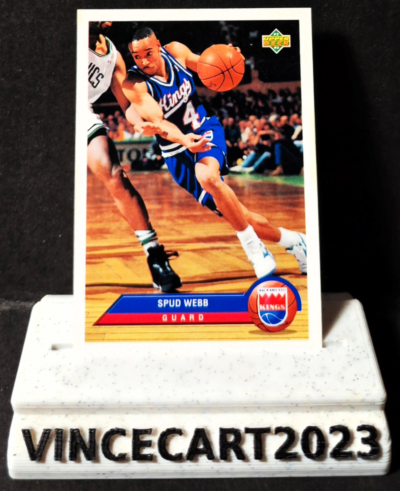

Carte NBA Spud Webb Upper Deck 1992-93 #P35 Sacramento Kings Vintage
1,60 €
🏀 Carte NBA originale Upper Deck 1992-93 de Spud Webb, meneur emblématique des Sacramento Kings et célèbre vainqueur du Slam Dunk Contest 1986 malgré sa petite taille. 📋 Détails : Joueur : Spud Webb Équipe : Sacramento Kings Collection : Upper Deck 1992-93 Numéro : #P35 Carte originale, non reprint ✅ État général : très bon (voir les photos pour apprécier l'état exact de la carte). Une belle carte vintage des années 90, idéale pour les collectionneurs NBA, les fans de Spud Webb ou les amateurs de cartes Upper Deck. 📦 Envoi rapide et soigné sous sleeve